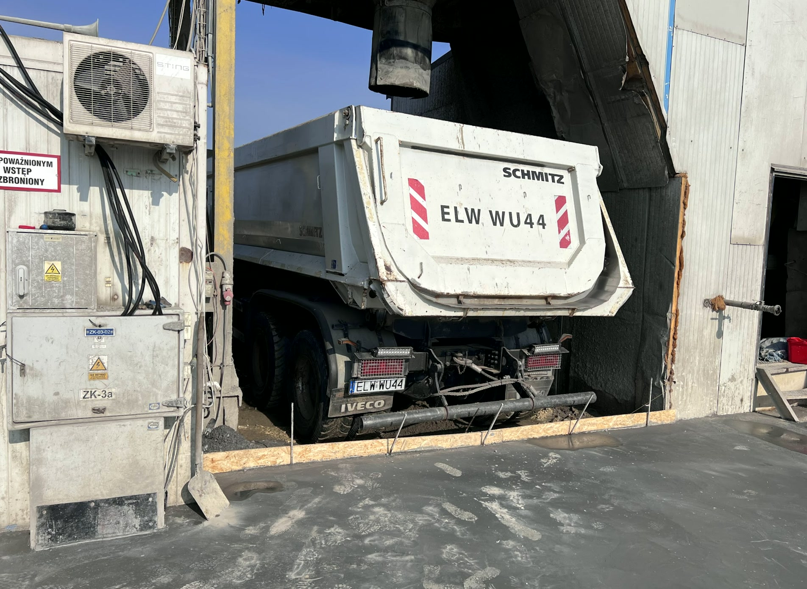

Kim jesteśmy
KRAKSTRANS Wiesław Krakowiak to transport wywrotką z Koluszek. Dojeżdżamy do 50 km od bazy, jeździmy dla domów i działek, a chętnie także dla większych firm budowlanych na stałe zlecenia.

Nasz sprzęt
Dwie wywrotki Iveco
W firmie jeżdżą dwie wywrotki Iveco: czerwona i biała Trakker 8x4. Obie mają napis KRAKSTRANS na kabinie, więc łatwo je poznać na budowie.
Klienci w opiniach Google piszą o konkretnym podejściu, dobrym kierowcy i dużych ilościach przewożonego materiału. Wszystkie opinie to piątki.
Kroki
- 01TelefonMówisz, co trzeba przewieźć albo rozebrać i gdzie.
- 02Cena i dzieńPytamy o ilość i dojazd, podajemy cenę i termin kursu.
- 03KursPrzyjeżdżamy o umówionej porze i wysypujemy tam, gdzie wskażesz.
- 04GotoweMateriał leży na miejscu albo gruz jest już wywieziony z posesji.
Masz coś do przewiezienia?
+48 600 439 938
Bez zobowiązań. Powiedz, co trzeba zrobić, a podamy cenę.